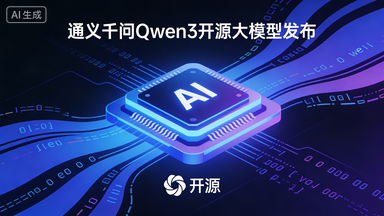

先说一件刚发生的事
2026 年 4 月，阿里巴巴发布了 Qwen3——通义千问系列的最新一代大模型。
发布的时候，阿里说了一句话：Qwen3-72B 在主流评测中超越了 GPT-4o，是目前全球最强的开源大模型。
这句话有两个关键词。一个是"最强"，一个是"开源"。
最强，你可能已经听腻了——每隔几个月就有人说自己最强。但"开源"这两个字，才是真正值得停下来想一想的地方。
一、"开源"到底意味着什么
你可以把大模型想象成一个超级聪明的大脑。
ChatGPT 的大脑是 OpenAI 的私有财产——你只能通过他们的网站或 API 来"借用"这个大脑，而且每次借用都要付钱，数据也会经过他们的服务器。
Qwen3 不一样。阿里把这个大脑的完整"设计图纸"（也就是模型权重）公开发布了，任何人都可以免费下载，装到自己的电脑或服务器上，然后随便用。
这意味着什么？
假设你是一家医院的 IT 负责人，想用 AI 帮医生整理病历。如果用 ChatGPT，病人的隐私数据就要传到美国的服务器——这在很多国家是违法的。但如果用 Qwen3，你可以把模型部署在医院自己的服务器上，数据一步都不出院内网。
二、Qwen3 到底有多强
说"最强"太抽象。换几个具体的数字来感受一下。
Qwen3-72B（72B 是参数量，可以理解为"大脑的神经元数量"）在以下几项测试中超过了 GPT-4o：
| 测试项目 | 测的是什么 | Qwen3-72B | GPT-4o |
|---|---|---|---|
| MMLU | 综合知识理解 | ✅ 更高 | — |
| HumanEval | 写代码的能力 | ✅ 更高 | — |
| MATH | 解数学题 | ✅ 更高 | — |
| 中文理解 | 读懂中文的能力 | ✅ 明显更强 | — |
中文理解这一项尤其值得关注。毕竟 GPT-4o 是用英文语料为主训练的，而 Qwen3 在中文上投入了大量资源——这对中文用户来说是实实在在的差距。
另外，Qwen3 支持 128K 上下文窗口。这个词你可能没听过，但可以这样理解：它一次能"记住"的内容，相当于一本 20 万字的书。你把整本书扔给它，它能记住每一页，然后回答你关于任何一页的问题。
三、为什么这件事现在突然这么重要
两年前，"最强 AI"这个位置只属于 OpenAI 和 Google。开源模型跟它们之间有一道明显的能力鸿沟——开源的能用，但不够好。
这道鸿沟正在消失。
2025 年底，Meta 的 Llama 3 让开源模型第一次在部分任务上追平了 GPT-4。2026 年 4 月，Qwen3 直接宣称在综合评测上超越了 GPT-4o。
这不只是技术竞赛的结果，背后有一个更重要的趋势：AI 的能力正在从少数几家公司的"专有资产"，变成全社会可以自由使用的"公共基础设施"。
就像 20 年前 Linux 打破了微软对操作系统的垄断，今天的开源大模型正在做同样的事。
四、它会影响谁
如果你是普通用户
短期内，你可能感受不到直接变化——你还是在用 ChatGPT 或者文心一言。
但 Qwen3 的发布会推动一件事：AI 服务的价格会继续下降。当开源模型的能力追上商业模型，商业模型就必须降价来竞争。这对你是好事。
如果你是开发者或创业者
这是一个很大的机会窗口。
以前，想做一个 AI 产品，你必须依赖 OpenAI 的 API，每个月的 API 费用可能是你最大的成本。现在，你可以把 Qwen3 部署在自己的服务器上，边际成本接近于零。
更重要的是，你可以针对自己的业务场景对模型进行微调（fine-tuning）——让它更懂你的行业术语、更符合你的用户习惯。这件事用闭源模型几乎做不到，但用 Qwen3 完全可以。
如果你在企业里负责 AI 落地
数据安全和合规是你最大的顾虑。Qwen3 的开源属性直接解决了这个问题——私有化部署，数据不出内网，合规压力大幅降低。
Qwen3 采用 Apache 2.0 协议开源，这意味着你可以免费用于商业项目，不需要向阿里支付任何费用，也不需要开放你自己的代码。这是目前最宽松的开源协议之一。
五、现在你可以做什么
如果你只是想了解 Qwen3 能做什么，最简单的方式是直接去 通义官网（tongyi.aliyun.com）试用——免费，不需要任何技术背景。
如果你想在自己的电脑上本地运行 Qwen3，可以用 Ollama 工具，3 条命令就能跑起来。我们之前写过一篇 Ollama 保姆级入门教程，可以直接参考。
如果你是开发者，想通过 API 调用 Qwen3，阿里云的 DashScope 平台提供了免费额度，文档完整，接入成本很低。
最后说一句
每次有新模型发布，都会有人说"这次是真的改变了一切"。大多数时候，这句话是夸张的。
但 Qwen3 这次有点不一样——不是因为它"最强"，而是因为它把"最强"这件事变成了免费的、可以私有化部署的、任何人都能用的东西。
这个变化，比模型本身更值得关注。